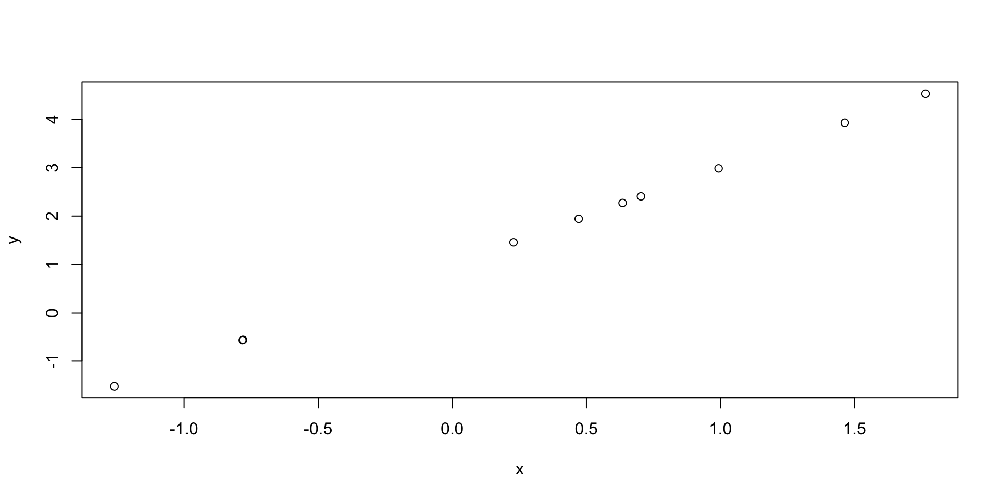

[1] 4.91112408 2.42348450 2.95600653 -2.24513386 1.20225151 0.42099115
[7] 5.36787301 0.02260687 -3.37927332 3.77362555Tools for Reproducible Research
Advanced Statistics and Data Analysis
Davide Risso
Introduction
One of my personal goals for this course is to convince you of how important the concept of reproducible research is.
This is a fundamental topic in modern statistics and data science, and it is particularly important when dealing with large and complex data, such as those we find in computational biology.
Here I will illustrate some practical tools that we can use to ensure reproducibility of the results.
Motivation
From a collaborator:
Davide,
Please find attached the updated data.
It would be best to re-run the whole analysis to update the figures for the manusctipt.
Best,
Your lovely collaborator
Motivation
What is “reproducible reasearch”?
Important
A data analsyis is reproducible if, starting from the raw data and the code used to analyze them, another analyst can reproduce the results of the original analysis.
Reproducible vs. Replicable
A study is reproducible if starting from the same data we arrive at the same results.
A study is replicable if starting from new, independent data we arrive at the same conclusions.
Warning
Reproducibility does not imply correctness!
Why reproducibility?
- Replicability is one of the core concepts of science.
- In many scientific fields (including biology), a discovery is confirmed only after an independent research team is able to reproduce the results.
- As data analysts we cannot guarantee the study correctness or replicability.
- The only thing we can guarantee is its reproducibility: using my data and my code, you get my results.
- Think about it as a low bar of scientific best practice.
Why reproducibility?
- Andrew Gelman described the many choices that an analyst can make as a “garden of forking paths”
- For instance, we have freedom to choose the model, which variables to include, whether to remove outliers, …
- With complex data, we cannot “look” at all the data at once, it is hard to reason in high dimensions.
- We have to trust the process of data analysis.
Why reproducibility?
- Very often biostatisticians and bioinformaticians that want to replicate the analysis of a study need to make a great effort in understanding exactly what is described in the methods section of a paper.
- Keith Baggerly called this forensic bioinformatics.
- The goal of reproducible research is to make this process automatic.
Example
Basic principles of reproducibility
- Everything via code
- Everything automated
- Workflow and dependencies clearly documented
- Get the data in the most-raw form possible
- Get any/all data and meta-data possible
- Keep track of the provenance of all data files
- Be self-sufficient
Source: Karl Broman Tools for reproducible research
Basic tools
knitr / R markdown / Quarto
Git / version control
Docker
What not to do
- Open a data file to do even a slight edit
- Paste results into the text of a manuscript
- Copy-paste-edit tables
- Copy-paste-adjust figures
- Copy-paste code
- loops \(<\) functions \(<\) packages
Source: Karl Broman Tools for reproducible research
Literate programming
Literate programming
Literate programming was introduced by Donald Knuth as a way to weave together programming and natural language.
The idea is that the natural language explanation and the program itself live in the same document.
R and literate programming
R has a long history of supporting literate programming.
knitr, its predecessor Sweave, and rmarkdown, are three packages that make it possible.
Lately, Quarto has been developed as a language-agnostic alternative, able to combine R and Python with markdown to produce html and pdf documents.
Quarto can be used for websites, books, and more.
An example
What is markdown?
Markdown is a mark-up language, very easy to write and human readable.
It’s easy to create lists, italic, bold text, e.g.:
- One
- _Two_
- __Three__Renders as
- One
- Two
- Three
What about code?
Code “chunks” can be included with the following syntax.
What about code?
Depending on the options, we can decide to show the code or not, and to execute it or not, printing outputs and even figures.
What about code?
Depending on the options, we can decide to show the code or not, and to execute it or not, printing outputs and even figures.
Global options (YAML)
YAML is a human-readable language that can be used to include options at the beginning of your documents.
Version Control (git)
Motivation

Version control
There are essentially three possibilities when you work on a long project (think about your thesis!).
- Use one version of the file.
- Save each time a new version to a new file.
- Use a “version control” system.
Version control
Obviously 2 is better than 1!
But what happens if something goes wrong and you need to find (quickly) the last working version?
What happens if you send a version to your collaborator and then keep working on the file?
Advantages of version control
- The whole history of changes is saved
- You can easily revert back to a previous version
- If two people edit the same file at the same time, you can “merge” the two versions
- You have automatic backups!
An example
Git
Git is a version control system developed by Linus Torvalds to work on the Linux project.
It tracks all file types, but not ideal for binary or proprietary files.
It’s integrated in R Studio and is freely available as an open source software.
Free websites offer it as a service (Github, Gitlab, …)
To learn Git
Docker Containers
Motivation
- Even though we may be sure that we know what a script does (because we have documented it with Quarto) …
- … and we are sure we are using the right version of the code (because we are using git) …
- … the results could still change in between two runs of the code.
Important
How come?
Software versions
When R packages (or R itself) are updated, the developers may change default values or fix bugs.
This may cause your code to not work anymore.
Or worse, it could change your results.
One solution
One solution is to add the command sessionInfo() to all your documents.
This way, we can record the R version and the version of all the packages that we have loaded in our session.
R version 4.4.0 (2024-04-24)
Platform: x86_64-apple-darwin20
Running under: macOS 15.1.1
Matrix products: default
BLAS: /Library/Frameworks/R.framework/Versions/4.4-x86_64/Resources/lib/libRblas.0.dylib
LAPACK: /Library/Frameworks/R.framework/Versions/4.4-x86_64/Resources/lib/libRlapack.dylib; LAPACK version 3.12.0
locale:
[1] en_US.UTF-8/en_US.UTF-8/en_US.UTF-8/C/en_US.UTF-8/en_US.UTF-8
time zone: Europe/Rome
tzcode source: internal
attached base packages:
[1] stats graphics grDevices utils datasets methods base
loaded via a namespace (and not attached):
[1] compiler_4.4.0 fastmap_1.2.0 cli_3.6.3 tools_4.4.0
[5] htmltools_0.5.8.1 rstudioapi_0.17.1 yaml_2.3.10 rmarkdown_2.29
[9] knitr_1.49 jsonlite_1.8.9 xfun_0.50 digest_0.6.37
[13] rlang_1.1.4 evaluate_1.0.3 A better solution
Create and share a “virtual machine” that contains all the software needed to reproduce your analysis.
This container will have the exact same versions of all the software that you need and will guarantee that whoever runs it will get the exact results that you had.
Popular software to achieve this are Docker and Singularity.
Learn Docker and Singularity
A good R-centric first intro to Docker and singularity is provided by the Bioconductor project here.